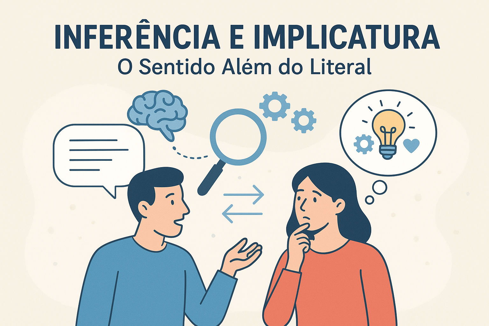

Inferência e Implicatura: O Sentido Além do Literal
A comunicação humana é muito mais complexa do que o simples encadeamento de palavras. O que dizemos raramente se resume ao que está literalmente expresso — e compreender o que é dito envolve processos cognitivos e contextuais que ultrapassam o significado linguístico. Nesse contexto, conceitos como inferência e implicatura tornam-se essenciais para entender como construímos e interpretamos sentidos na interação cotidiana.
“A inferência é a habilidade de captar sentidos a partir do não dito, essencial à comunicação humana.” (KERBRAT-ORECCHIONI, 1986)
O papel da inferência na compreensão da linguagem
A inferência é o processo mental que permite ao ouvinte (ou leitor) deduzir informações que não estão explicitamente expressas, mas que podem ser recuperadas a partir do contexto, do conhecimento prévio e das intenções comunicativas do falante.
Por exemplo, ao ouvir alguém dizer “Está frio aqui, não acha?”, podemos inferir que o falante não está apenas comentando o tempo, mas talvez pedindo para fechar a janela. Esse tipo de interpretação depende de nossa capacidade inferencial, que mobiliza tanto o conhecimento linguístico quanto sociocultural.
Segundo Ducrot (1987), compreender uma enunciação implica “ir além das palavras”, decodificando as pistas deixadas pelo falante e as intenções comunicativas que subjazem ao discurso. Assim, a inferência é a base da comunicação implícita, fundamental para a interpretação de textos, conversas e até mensagens publicitárias.
Implicatura e pressuposição: diferenças fundamentais
A implicatura é um conceito desenvolvido por H. P. Grice (1975), um dos pilares da pragmática. Ela diz respeito ao significado não dito, mas sugerido em um enunciado, que pode ser inferido a partir dos princípios conversacionais — especialmente o Princípio da Cooperação, segundo o qual os falantes buscam ser informativos, verdadeiros, relevantes e claros.
Por exemplo:
A: “Você vai à festa da Ana?”
B: “Tenho que acordar cedo amanhã.”
B não respondeu diretamente, mas implicou que não vai à festa. O sentido é recuperado pela inferência, a partir do contexto e do conhecimento das regras sociais.
Já a pressuposição refere-se a informações que são necessariamente assumidas como verdadeiras para que o enunciado faça sentido.
Por exemplo:
“João parou de fumar.” → Pressupõe que João fumava antes.
Enquanto a implicatura pode ser cancelada (“João parou de fumar — quer dizer, na verdade, nunca fumou, era só uma brincadeira”), a pressuposição não pode ser facilmente negada, pois está incorporada à estrutura semântica da frase.
Em resumo:
• Inferência: processo cognitivo geral de dedução de sentidos.
• Implicatura: sentido não dito, mas sugerido pelo contexto comunicativo.
• Pressuposição: informação assumida como verdadeira no enunciado.
A pragmática e os sentidos implícitos: ambiguidades, ironias e indiretas
A pragmática — ramo da linguística que estuda a relação entre linguagem e contexto — é o campo que melhor explica como o sentido vai além do literal.
Ambiguidade
Surge quando uma expressão pode ter mais de um sentido. Exemplo: “Maria viu o homem com o telescópio.” → Quem estava com o telescópio, Maria ou o homem? A interpretação depende do contexto e das inferências do leitor.
Ironia
Na ironia, o falante diz o oposto do que realmente quer comunicar, contando com a inferência do interlocutor para captar o sentido. Exemplo: “Que ótimo, choveu bem no dia do piquenique!” → O sentido irônico só é percebido quando o ouvinte entende o contexto e reconhece o tom de desapontamento.
Indiretas
A comunicação indireta é um dos usos mais sofisticados da linguagem humana. Muitas vezes, o falante evita ser explícito por motivos sociais, afetivos ou estratégicos. Exemplo: “Essa sala está um pouco escura...” → Pode implicar: “Alguém pode acender a luz?”
Esses fenômenos mostram que a compreensão linguística é profundamente inferencial — dependente de fatores como o contexto, o conhecimento partilhado e a intenção comunicativa.
O sentido além do dito: o poder da inferência na interação humana
A linguagem humana é um sistema aberto, flexível e criativo. Através dela, comunicamos não apenas fatos, mas intenções, emoções, críticas e valores. A capacidade de inferir significados implícitos é o que torna a comunicação humana tão rica e complexa.
Como observa Levinson (1983), compreender uma conversação envolve reconstruir o raciocínio pragmático do falante — isto é, por que ele disse o que disse daquela forma, naquele momento. A pragmática, portanto, revela a dimensão social e cognitiva da linguagem, mostrando que o verdadeiro sentido não está apenas nas palavras, mas nas relações que elas estabelecem entre pessoas e contextos.
Referências
DUCROT, Oswald. O dizer e o dito. Campinas: Pontes, 1987.
GRICE, H. P. Logic and Conversation. In: COLE, P.; MORGAN, J. (eds.). Syntax and Semantics 3: Speech Acts. New York: Academic Press, 1975.
KERBRAT-ORECCHIONI, Catherine. A enunciação: da subjetividade no discurso. São Paulo: Editora Martins Fontes, 1986.
LEVINSON, Stephen C. Pragmatics. Cambridge: Cambridge University Press, 1983.
LYONS, John. Semantics. Cambridge: Cambridge University Press, 1977.